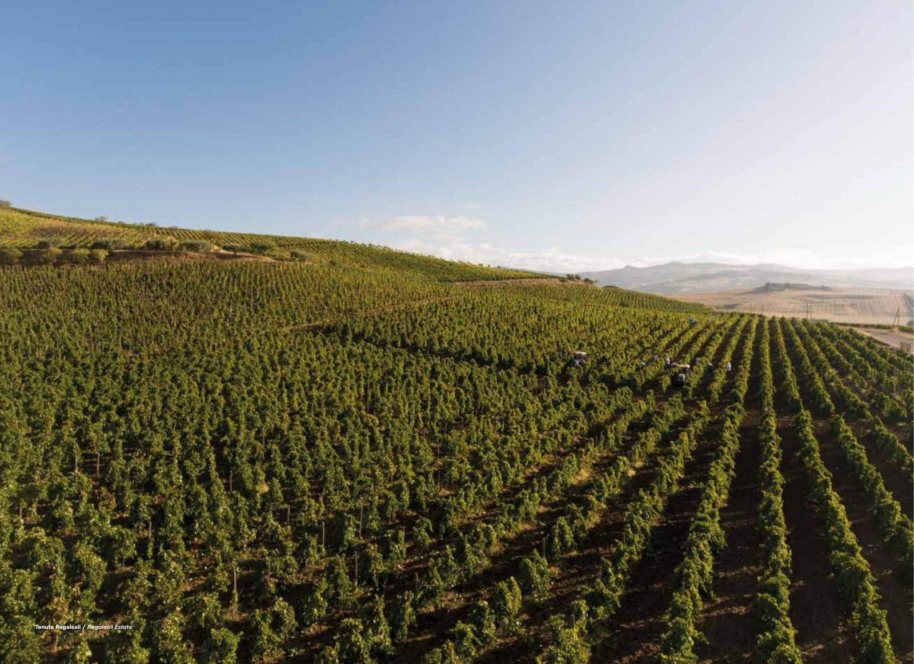
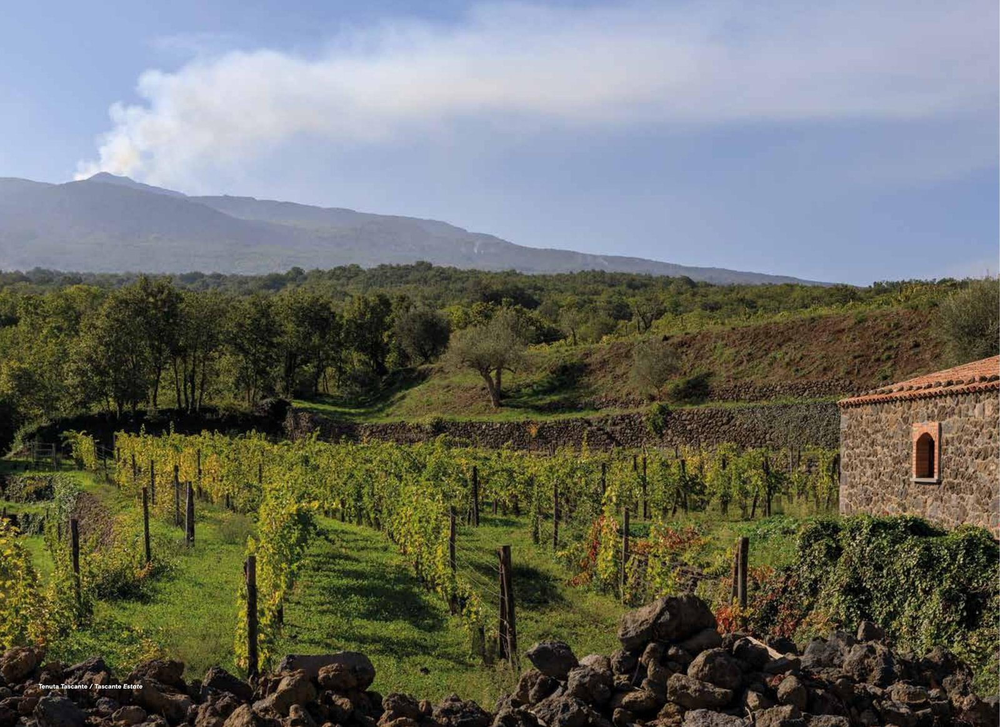
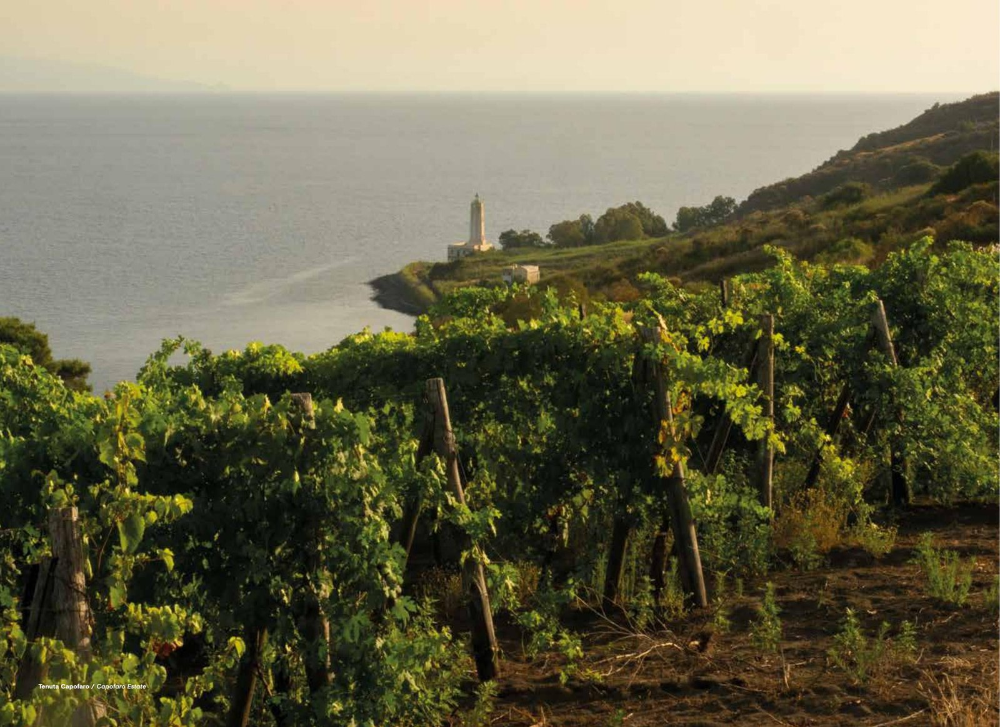
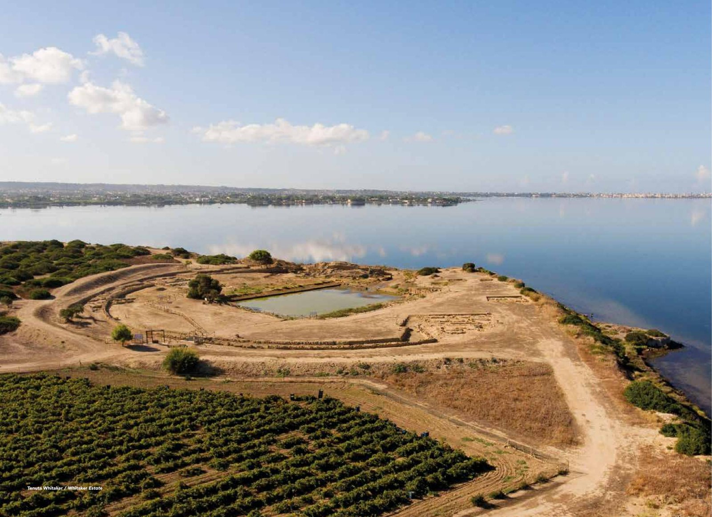
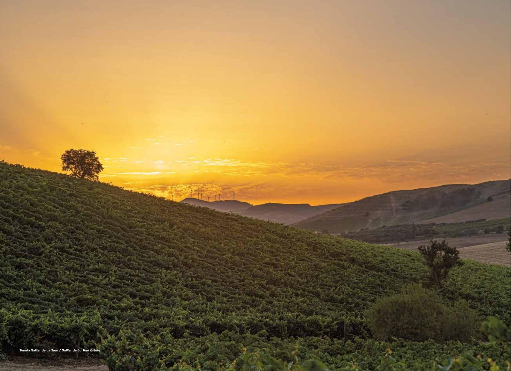
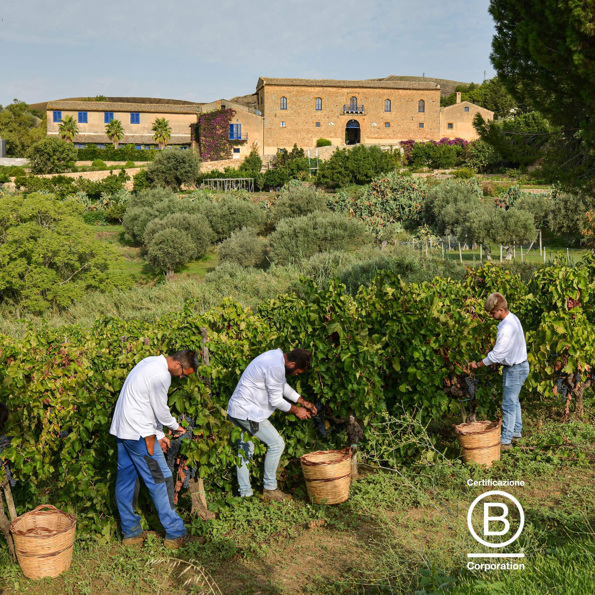
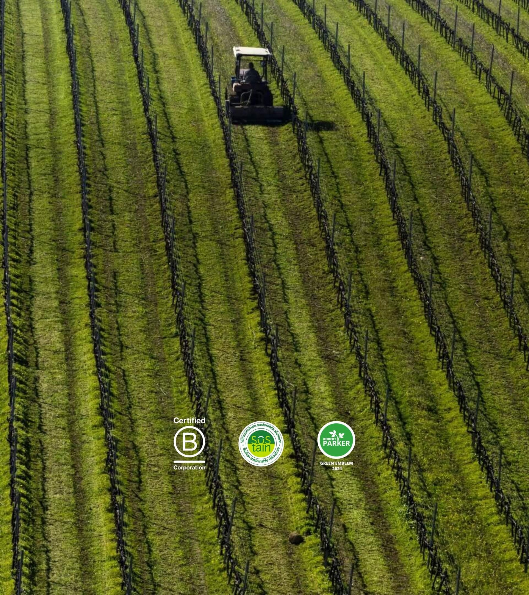

Regaleali
La tenuta fondativa e il cuore geografico della Sicilia: 557 ettari, di cui 397 a vigneto, con 25 varietà in produzione e 57 ettari lasciati a riserva naturale.
Il percorso di Tasca d'Almerita, giunto al quindicesimo report consecutivo: un impegno di lungo periodo per la terra, l'acqua, l'aria e le comunità delle cinque tenute siciliane della famiglia.
Consulta il Report di Sostenibilità 2025Conte Tasca d'Almerita Società Agricola a R.L. nasce nel 1830, quando i fratelli Lucio e Carmelo Mastrogiovanni Tasca acquistarono l'ex feudo di Regaleali, circa 1.200 ettari tra le campagne di Sclafani Bagni e Vallelunga Pratameno, nel cuore della Sicilia. Da allora la guida dell'azienda è rimasta nella stessa famiglia per otto generazioni, fino ad Alberto Tasca d'Almerita, oggi anche presidente della Fondazione SOStain Sicilia.
Nel tempo a Regaleali, la tenuta fondativa, si sono affiancate altre quattro proprietà, ciascuna dedicata a un territorio e a vitigni specifici: Tascante sull'Etna, Capofaro sull'isola di Salina, Whitaker sull'isola di Mozia e Sallier de La Tour nella DOC Monreale. Cinque tenute, un solo principio: una viticoltura che restituisca alla terra più di quanto le venga chiesto.
Prima azienda vitivinicola italiana certificata VIVA/SOStain a livello di intera organizzazione.
Wine Enthusiast premia Tasca d'Almerita come "European Winery of the Year".
Robert Parker Green Emblem, per gli sforzi nella tutela ambientale e della biodiversità.
L'azienda diventa Società Benefit ed è certificata B Corp.
Iscrizione al Registro Speciale dei Marchi Storici di Interesse Nazionale.
Ogni tenuta ha un proprio terroir, un proprio microclima e una propria storia, ma condivide con le altre lo stesso impianto di sostenibilità del protocollo SOStain.

La tenuta fondativa e il cuore geografico della Sicilia: 557 ettari, di cui 397 a vigneto, con 25 varietà in produzione e 57 ettari lasciati a riserva naturale.

"Un vigneto sul vulcano": 35,79 ettari tra Nerello Mascalese, Carricante e Nerello Cappuccio, con quasi 200 muretti a secco e un castagneto di 7 ettari.

12,13 ettari sull'isola verde delle Eolie, patrimonio UNESCO: qui nasce la Malvasia, da vigneti storici tra cui l'"Anfiteatro", coltivati da decenni.

40 ettari su un isolotto fenicio di 2.700 anni, dove nacque forse il primo nucleo del Grillo: qui i destini delle famiglie Whitaker e Tasca si sono intrecciati.

78,4 ettari nella tenuta della famiglia Sallier de La Tour dalla metà dell'Ottocento, con tre laghi collinari e sorgenti naturali che sostengono il vitigno Syrah.
Dal 2010 Tasca d'Almerita aderisce a SOStain, il protocollo di sostenibilità per la viticoltura siciliana verificato da un ente terzo indipendente. Dieci requisiti minimi, misurabili e comparabili, guidano ogni tenuta della famiglia. Scorri il carosello con il dito, con il trackpad o trascinando con il mouse.
Certificazione SQNPI (Sistema di Qualità Nazionale Produzione Integrata), a garanzia di un uso controllato dei prodotti fitosanitari.
Nessuna delle cinque tenute pratica il diserbo chimico: si ricorre esclusivamente a mezzi meccanici (zappa, aratri, erpici sottofila).
Il 71% della superficie delle tenute è a vigneto; il resto è dedicato a pascoli, oliveti, boschi, laghi e torrenti, con arnie per la tutela degli impollinatori.
Pali in legno e ferro riciclabile, legacci per la potatura in materiale degradabile dove possibile.
Il 100% delle uve e il 75% dei servizi impiegati provengono dal territorio siciliano, da fornitori situati nei dintorni delle tenute.
Dal 2016, quattro indicatori calcolati a livello di intera organizzazione: Aria (Carbon Footprint), Acqua (Water Footprint), Vigneto e Territorio.
Il disciplinare SOStain fissa un limite di 0,70 kWh per litro di vino vinificato: la media delle tenute Tasca è di 0,53 kWh/litro.
Peso medio delle bottiglie da 0,75 litri: 518 grammi, contro un limite disciplinare di 550 g. Vetro riciclato al 70-80%.
Pubblicato ogni anno senza interruzioni dal 2011: la trasparenza e la comparabilità dei dati nel tempo sono parte del metodo, non un adempimento.
Analisi obbligatorie ogni anno su tutti i vini: nessun residuo è mai stato riscontrato nel corso degli anni.
Alberto Tasca descrive nella lettera che apre il report un orizzonte che va oltre la semplice sostenibilità: un modello "Nature Positive", capace di restituire al territorio più valore di quanto l'attività dell'azienda ne consumi. È il motivo per cui Tasca d'Almerita è stata tra i soci fondatori di SOStain nel 2010 e, nel 2017, la prima cantina italiana a ottenere la certificazione VIVA/SOStain a livello di intera organizzazione.
Nel marzo 2023 Tasca d'Almerita è diventata anche B Corp certificata, entrando a far parte di un network internazionale di aziende che rispettano alti standard di performance sociale e ambientale. Con una modifica statutaria, l'azienda è inoltre diventata Società Benefit, impegnandosi giuridicamente ad affiancare agli obiettivi di profitto anche finalità di beneficio comune. Oggi la Fondazione SOStain Sicilia, presieduta da Alberto Tasca dal 2020, riunisce 39 cantine siciliane impegnate nello stesso percorso.
"Oggi, dopo 15 anni di studio e sperimentazione, sentiamo che il concetto di sostenibilità, inteso come semplice riduzione degli impatti, non è più sufficiente. La sfida è più ambiziosa: rigenerare."
Alberto Tasca, Report di Sostenibilità 2025


Anno di fondazione, a Regaleali
Generazioni della famiglia Tasca in agricoltura e nel vino
Anno di adesione al protocollo SOStain
kWh di energia fotovoltaica prodotta nel 2025
CO₂ equivalenti risparmiate nel 2025 grazie al fotovoltaico
Report di sostenibilità pubblicato, edizione 2025
Il documento integrale, con gli indicatori del programma VIVA e i dieci requisiti del protocollo SOStain applicati a ciascuna delle cinque tenute.
⬇ Scarica il PDF (Report Sostenibilità 2025)